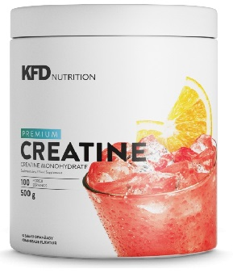
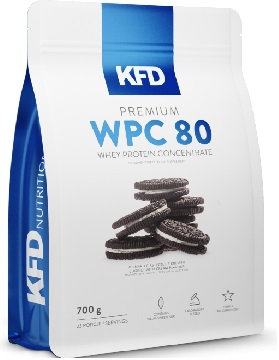
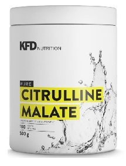

Suplementacja
1. Kreatyna

Kreatyna to naturalnie występująca w organizmie człowieka substancja. Dostarczana jest ona z pożywieniem oraz syntezowana w organizmie, w większości występuje w mieśniach i w procesie fosforylacji zamieniana jest na fosfokreatynę, stanowiąc "awaryjne źródło" ATP. Według licznych prac naukowych, suplementacja kreatyną ma potencjalny wpływ na poprawę siły, wydolności oraz wzmożenie procesów anabolicznych.
Suplementacją kreatyny mogą być zainteresowane osoby, myślące o szybszej budowie masy mieśniowej, wzroście siły i wydolności organizmu. Warto zaznaczyć, że podstawą są treningi i dieta, bez których żaden suplement nie przyniesie porządanych efektów.
2. Białko

KFD Premium WPC 80 to wysokiej jakości, instantyzowany i w 100% czysty koncentrat białka serwatkowego użyty jako główny składnik produktu.
Wyróżnia się doskonałą kompozycją smakową (w ofercie mamy kilkadziesiąt smaków do wyboru!). Używany przez nas surowiec jest instantyzowany / aglomeryzowany - to znaczy, że charakteryzuje się doskonałą rozpuszczalnością, a po przygotowaniu nie powstaje uporczywa piana.
Produkt firmy KFD otrzymywany jest przy użyciu procesu ultrafiltracji, w którym tłuszcze oraz cukry są efektywniej separowane od białek przez co otrzymany produkt wykazuje wyższą czystość.
Pozbawiony jest również aspartamu i innych uważanych za kontrowersyjne - dodatków jak wypełniacze w tym sztuczne "substancje barwiące".
3. Cytrulina

KFD PURE CYTRULLINE MALATE - to produkt linii suplementów PURE - bez aromatów i słodzików, wysokiej jakości czysty surowiec bez zbędnych dodatków. Produkt nadaje się zarówno do mieszania z innymi suplementami np. smakowymi, jak i dla osób unikających słodzików w diecie.
Cytrulina znana jest z właściwości wspomagających przy wysiłku fizycznym, co przekłada się na zwiększenie objętości naszego treningu, opóźnienie zmęczenia i zmniejszenie bólu mięśni. [1]
Jedną z największych zalet tego suplementu jest, naszym zdaniem, podniesienie poziomu tlenku azotu, co przekłada się na lepszą pompę treningową, a tym samym prowadzi do lepszego ukrwienia i anabolizmu.